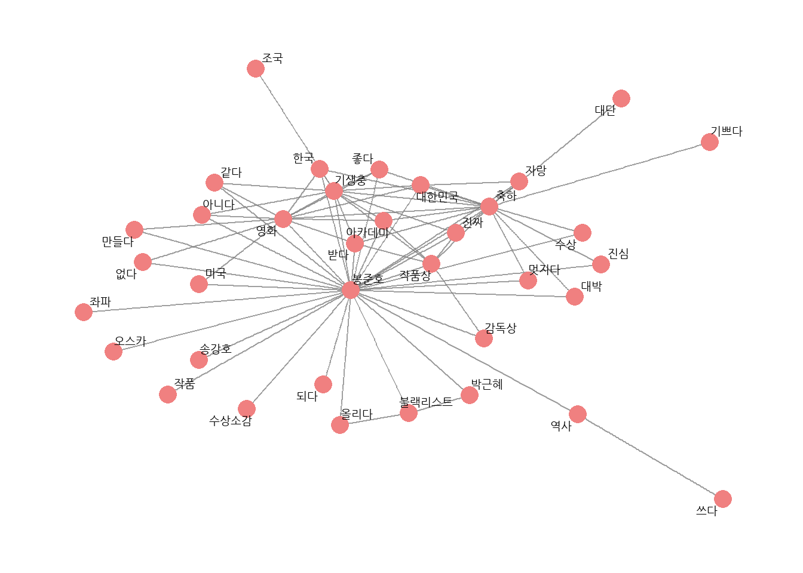
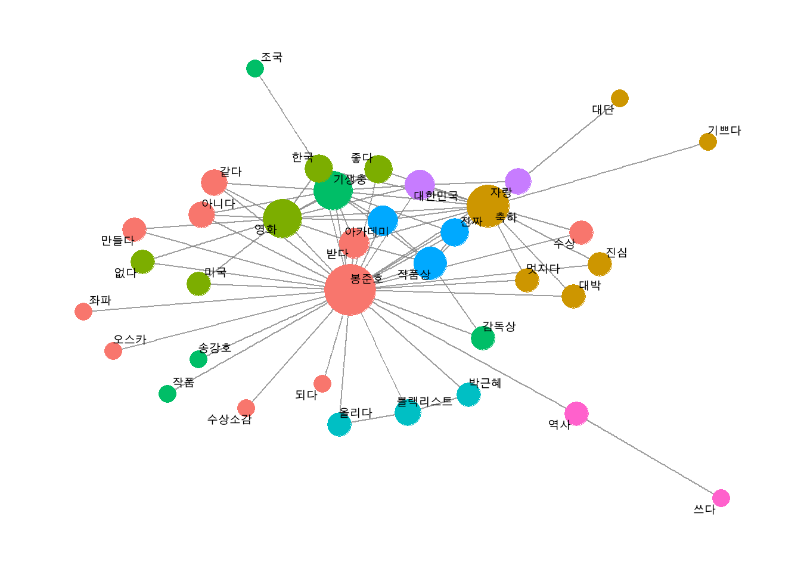
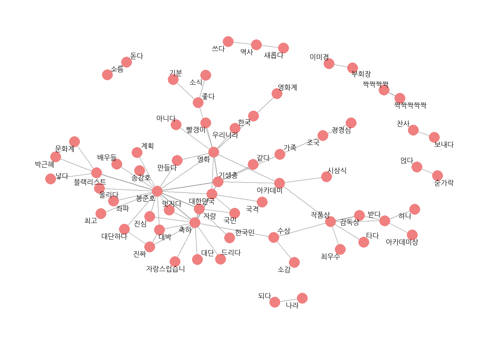

# 기본적인 전처리# 기생충 기사 댓글 불러오기raw_news_comment <- readr::read_csv("data/news_comment_parasite.csv")
Rows: 4150 Columns: 5
── Column specification ────────────────────────────────────────────────────────
Delimiter: ","
chr (4): reply, press, title, url
dttm (1): reg_time
ℹ Use `spec()` to retrieve the full column specification for this data.
ℹ Specify the column types or set `show_col_types = FALSE` to quiet this message.
# 전처리library(tidyverse)
── Attaching core tidyverse packages ──────────────────────── tidyverse 2.0.0 ──
✔ dplyr 1.1.1 ✔ readr 2.1.4
✔ forcats 1.0.0 ✔ stringr 1.5.0
✔ ggplot2 3.4.2 ✔ tibble 3.2.1
✔ lubridate 1.9.2 ✔ tidyr 1.3.0
✔ purrr 1.0.1
── Conflicts ────────────────────────────────────────── tidyverse_conflicts() ──
✖ dplyr::filter() masks stats::filter()
✖ dplyr::lag() masks stats::lag()
ℹ Use the conflicted package (<http://conflicted.r-lib.org/>) to force all conflicts to become errors
# A tibble: 10 × 2
reply id
<chr> <int>
1 정말 우리 집에 좋은 일이 생겨 기쁘고 행복한 것처럼 나의 일인 양 행복합… 1
2 와 너무 기쁘다 이 시국에 정말 내 일같이 기쁘고 감사하다 축하드려요 진… 2
3 우리나라의 영화감독분들 그리고 앞으로 그 꿈을 그리는 분들에게 큰 영감… 3
4 봉준호 감독과 우리나라 대한민국 모두 자랑스럽다 세계 어디를 가고 우리… 4
5 노벨상 탄느낌이네요 축하축하 합니다 5
6 기생충 상 받을때 박수 쳤어요 감독상도 기대해요 봉준호 감독 화이팅 6
7 대한민국 영화사를 새로 쓰고 계시네요 7
8 저런게 아카데미상 받으면 태극기 휘날리며 광해 명량 은 전부문 휩쓸어야… 8
9 다시한번 보여주세요 영화관에서 보고싶은디 9
10 대한민국 와함께 봉준호감독님까지 대단하고 한국의 문화에 자긍심을 가지… 10
# 토큰화하기# 1. 형태소 분석기를 이용해 품사 기준으로 토큰화하기library(tidytext)library(KoNLP)
# A tibble: 39,956 × 2
reply word
<chr> <chr>
1 정말 우리 집에 좋은 일이 생겨 기쁘고 행복한 것처럼 나의 일인 양 행복합… 정말…
2 정말 우리 집에 좋은 일이 생겨 기쁘고 행복한 것처럼 나의 일인 양 행복합… 우리…
3 정말 우리 집에 좋은 일이 생겨 기쁘고 행복한 것처럼 나의 일인 양 행복합… 집/n…
4 정말 우리 집에 좋은 일이 생겨 기쁘고 행복한 것처럼 나의 일인 양 행복합… 좋/p…
5 정말 우리 집에 좋은 일이 생겨 기쁘고 행복한 것처럼 나의 일인 양 행복합… 일/n…
6 정말 우리 집에 좋은 일이 생겨 기쁘고 행복한 것처럼 나의 일인 양 행복합… 생기…
7 정말 우리 집에 좋은 일이 생겨 기쁘고 행복한 것처럼 나의 일인 양 행복합… 기쁘…
8 정말 우리 집에 좋은 일이 생겨 기쁘고 행복한 것처럼 나의 일인 양 행복합… 행복…
9 정말 우리 집에 좋은 일이 생겨 기쁘고 행복한 것처럼 나의 일인 양 행복합… 것/n…
10 정말 우리 집에 좋은 일이 생겨 기쁘고 행복한 것처럼 나의 일인 양 행복합… 나/n…
# ℹ 39,946 more rows
# A tibble: 66,898 × 2
word reply
<chr> <chr>
1 정말/ma 정말 우리 집에 좋은 일이 생겨 기쁘고 행복한 것처럼 나의 일인 양 행복…
2 우리/np 정말 우리 집에 좋은 일이 생겨 기쁘고 행복한 것처럼 나의 일인 양 행복…
3 집/nc 정말 우리 집에 좋은 일이 생겨 기쁘고 행복한 것처럼 나의 일인 양 행복…
4 에/jc 정말 우리 집에 좋은 일이 생겨 기쁘고 행복한 것처럼 나의 일인 양 행복…
5 좋/pa 정말 우리 집에 좋은 일이 생겨 기쁘고 행복한 것처럼 나의 일인 양 행복…
6 은/et 정말 우리 집에 좋은 일이 생겨 기쁘고 행복한 것처럼 나의 일인 양 행복…
7 일/nc 정말 우리 집에 좋은 일이 생겨 기쁘고 행복한 것처럼 나의 일인 양 행복…
8 이/jc 정말 우리 집에 좋은 일이 생겨 기쁘고 행복한 것처럼 나의 일인 양 행복…
9 생기/pv 정말 우리 집에 좋은 일이 생겨 기쁘고 행복한 것처럼 나의 일인 양 행복…
10 어/ec 정말 우리 집에 좋은 일이 생겨 기쁘고 행복한 것처럼 나의 일인 양 행복…
# ℹ 66,888 more rows
# A tibble: 28,158 × 2
word reply
<chr> <chr>
1 우리 정말 우리 집에 좋은 일이 생겨 기쁘고 행복한 것처럼 나의 일인 양 행복…
2 집 정말 우리 집에 좋은 일이 생겨 기쁘고 행복한 것처럼 나의 일인 양 행복…
3 일 정말 우리 집에 좋은 일이 생겨 기쁘고 행복한 것처럼 나의 일인 양 행복…
4 행복한 정말 우리 집에 좋은 일이 생겨 기쁘고 행복한 것처럼 나의 일인 양 행복…
5 것 정말 우리 집에 좋은 일이 생겨 기쁘고 행복한 것처럼 나의 일인 양 행복…
6 나 정말 우리 집에 좋은 일이 생겨 기쁘고 행복한 것처럼 나의 일인 양 행복…
7 일 정말 우리 집에 좋은 일이 생겨 기쁘고 행복한 것처럼 나의 일인 양 행복…
8 양 정말 우리 집에 좋은 일이 생겨 기쁘고 행복한 것처럼 나의 일인 양 행복…
9 행복 정말 우리 집에 좋은 일이 생겨 기쁘고 행복한 것처럼 나의 일인 양 행복…
10 행복 정말 우리 집에 좋은 일이 생겨 기쁘고 행복한 것처럼 나의 일인 양 행복…
# ℹ 28,148 more rows
# 명사 빈도 구하기noun %>%count(word, sort = T)
# A tibble: 8,866 × 2
word n
<chr> <int>
1 영화 460
2 기생충 443
3 봉준호 339
4 것 328
5 축하 260
6 아카데미 252
7 대단 241
8 나 225
9 대한민국 225
10 자랑 217
# ℹ 8,856 more rows
# A tibble: 4,977 × 2
word reply
<chr> <chr>
1 좋다 정말 우리 집에 좋은 일이 생겨 기쁘고 행복한 것처럼 나의 일인 양 …
2 생기다 정말 우리 집에 좋은 일이 생겨 기쁘고 행복한 것처럼 나의 일인 양 …
3 기쁘다 정말 우리 집에 좋은 일이 생겨 기쁘고 행복한 것처럼 나의 일인 양 …
4 축하드리다 정말 우리 집에 좋은 일이 생겨 기쁘고 행복한 것처럼 나의 일인 양 …
5 기쁘다 정말 우리 집에 좋은 일이 생겨 기쁘고 행복한 것처럼 나의 일인 양 …
6 기쁘다 와 너무 기쁘다 이 시국에 정말 내 일같이 기쁘고 감사하다 축하드려…
7 기쁘다 와 너무 기쁘다 이 시국에 정말 내 일같이 기쁘고 감사하다 축하드려…
8 축하드리다 와 너무 기쁘다 이 시국에 정말 내 일같이 기쁘고 감사하다 축하드려…
9 불다 우리나라의 영화감독분들 그리고 앞으로 그 꿈을 그리는 분들에게 큰 …
10 크다 우리나라의 영화감독분들 그리고 앞으로 그 꿈을 그리는 분들에게 큰 …
# ℹ 4,967 more rows
# A tibble: 27,535 × 2
word reply
<chr> <chr>
1 우리 정말 우리 집에 좋은 일이 생겨 기쁘고 행복한 것처럼 나의 일인 양 …
2 행복한 정말 우리 집에 좋은 일이 생겨 기쁘고 행복한 것처럼 나의 일인 양 …
3 행복 정말 우리 집에 좋은 일이 생겨 기쁘고 행복한 것처럼 나의 일인 양 …
4 행복 정말 우리 집에 좋은 일이 생겨 기쁘고 행복한 것처럼 나의 일인 양 …
5 좋다 정말 우리 집에 좋은 일이 생겨 기쁘고 행복한 것처럼 나의 일인 양 …
6 생기다 정말 우리 집에 좋은 일이 생겨 기쁘고 행복한 것처럼 나의 일인 양 …
7 기쁘다 정말 우리 집에 좋은 일이 생겨 기쁘고 행복한 것처럼 나의 일인 양 …
8 축하드리다 정말 우리 집에 좋은 일이 생겨 기쁘고 행복한 것처럼 나의 일인 양 …
9 기쁘다 정말 우리 집에 좋은 일이 생겨 기쁘고 행복한 것처럼 나의 일인 양 …
10 시국 와 너무 기쁘다 이 시국에 정말 내 일같이 기쁘고 감사하다 축하드려…
# ℹ 27,525 more rows
# A tibble: 10 × 3
reply id word
<chr> <int> <chr>
1 정말 우리 집에 좋은 일이 생겨 기쁘고 행복한 것처럼 나의 일인 양 … 1 우리
2 정말 우리 집에 좋은 일이 생겨 기쁘고 행복한 것처럼 나의 일인 양 … 1 좋다
3 정말 우리 집에 좋은 일이 생겨 기쁘고 행복한 것처럼 나의 일인 양 … 1 생기…
4 정말 우리 집에 좋은 일이 생겨 기쁘고 행복한 것처럼 나의 일인 양 … 1 기쁘…
5 정말 우리 집에 좋은 일이 생겨 기쁘고 행복한 것처럼 나의 일인 양 … 1 행복…
6 정말 우리 집에 좋은 일이 생겨 기쁘고 행복한 것처럼 나의 일인 양 … 1 행복
7 정말 우리 집에 좋은 일이 생겨 기쁘고 행복한 것처럼 나의 일인 양 … 1 축하…
8 정말 우리 집에 좋은 일이 생겨 기쁘고 행복한 것처럼 나의 일인 양 … 1 행복
9 정말 우리 집에 좋은 일이 생겨 기쁘고 행복한 것처럼 나의 일인 양 … 1 기쁘…
10 와 너무 기쁘다 이 시국에 정말 내 일같이 기쁘고 감사하다 축하드려… 2 기쁘…
동시 출현 빈도 by using pairwise_count()
# 단어 동시 출현 빈도 구하기# install.packages("widyr")library(widyr)pair <- comment %>%pairwise_count(item = word,feature = id,sort = T)pair
# A tibble: 263,462 × 3
item1 item2 n
<chr> <chr> <dbl>
1 영화 기생충 111
2 기생충 영화 111
3 감독 봉준호 86
4 봉준호 감독 86
5 감독님 봉준호 66
6 봉준호 감독님 66
7 만들다 영화 55
8 영화 만들다 55
9 블랙리스트 감독 54
10 감독 블랙리스트 54
# ℹ 263,452 more rows
# 특정 단어와 자주 함께 사용된 단어 살펴보기pair %>%filter(item1 =="영화")
# A tibble: 2,429 × 3
item1 item2 n
<chr> <chr> <dbl>
1 영화 기생충 111
2 영화 만들다 55
3 영화 봉준호 47
4 영화 받다 45
5 영화 아카데미 42
6 영화 같다 41
7 영화 감독 39
8 영화 아니다 38
9 영화 한국 34
10 영화 좋다 33
# ℹ 2,419 more rows
pair %>%filter(item1 =="봉준호")
# A tibble: 1,491 × 3
item1 item2 n
<chr> <chr> <dbl>
1 봉준호 감독 86
2 봉준호 감독님 66
3 봉준호 기생충 49
4 봉준호 영화 47
5 봉준호 블랙리스트 43
6 봉준호 대한민국 37
7 봉준호 자랑 29
8 봉준호 대단 28
9 봉준호 축하 27
10 봉준호 아카데미 24
# ℹ 1,481 more rows
동시 출현 네트워크
네트워크 그래프 데이터 만들기
# 네트워크 그래프 데이터 만들기# install.packages("tidygraph")library(tidygraph)
Attaching package: 'tidygraph'
The following object is masked from 'package:stats':
filter
# 네트워크 그래프 만들기# install.packages("ggraph")library(ggraph)ggraph(graph_comment) +geom_edge_link() +# 엣지geom_node_point() +# 노드geom_node_text(aes(label = name)) # 텍스트
Using "stress" as default layout
Warning: Using the `size` aesthetic in this geom was deprecated in ggplot2 3.4.0.
ℹ Please use `linewidth` in the `default_aes` field and elsewhere instead.
Refine the graph
# 그래프 다듬기# 한글 폰트 설정library(showtext)
Loading required package: sysfonts
Loading required package: showtextdb
font_add_google(name ="Nanum Gothic", family ="nanumgothic")showtext_auto()# 엣지와 노드의 색깔, 크기, 텍스트 위치 수정set.seed(1234) # 난수 고정ggraph(graph_comment, layout ="fr") +# 레이아웃geom_edge_link(color ="gray50", # 엣지 색깔alpha =0.5) +# 엣지 명암geom_node_point(color ="lightcoral", # 노드 색깔size =5) +# 노드 크기geom_node_text(aes(label = name), # 텍스트 표시repel = T, # 노드밖 표시size =5, # 텍스트 크기family ="nanumgothic") +# 폰트theme_graph() # 배경 삭제
# 유의어 처리하기comment <- comment %>%mutate(word =ifelse(str_detect(word, "감독") &!str_detect(word, "감독상"), "봉준호", word),word =ifelse(word =="오르다", "올리다", word),word =ifelse(str_detect(word, "축하"), "축하", word))# 단어 동시 출현 빈도 구하기pair <- comment %>%pairwise_count(item = word,feature = id,sort = T)# 네트워크 그래프 데이터 만들기graph_comment <- pair %>%filter(n >=25) %>%as_tbl_graph()# 네트워크 그래프 만들기set.seed(1234)word_network(graph_comment)

# 연결중심성과 커뮤니티 표현하기# 1. 네트워크 그래프 데이터에 연결 중심성, 커뮤니티 변수 추가하기set.seed(1234)graph_comment <- pair %>%filter(n >=25) %>%as_tbl_graph(directed = F) %>%mutate(centrality =centrality_degree(), # 연결 중심성group =as.factor(group_infomap())) # 커뮤니티graph_comment
# A tbl_graph: 33 nodes and 144 edges
#
# An undirected multigraph with 1 component
#
# A tibble: 33 × 3
name centrality group
<chr> <dbl> <fct>
1 봉준호 58 1
2 축하 32 2
3 영화 26 4
4 기생충 24 3
5 블랙리스트 6 5
6 자랑 6 2
# ℹ 27 more rows
#
# A tibble: 144 × 3
from to n
<int> <int> <dbl>
1 1 2 197
2 1 2 197
3 1 3 113
# ℹ 141 more rows
# 2. 네트워크 그래프에 연결 중심성, 커뮤니티 표현하기set.seed(1234)ggraph(graph_comment, layout ="fr") +# 레이아웃geom_edge_link(color ="gray50", # 엣지 색깔alpha =0.5) +# 엣지 명암geom_node_point(aes(size = centrality, # 노드 크기color = group), # 노드 색깔show.legend = F) +# 범례 삭제scale_size(range =c(5, 15)) +# 노드 크기 범위geom_node_text(aes(label = name), # 텍스트 표시repel = T, # 노드밖 표시size =5) +# 폰트theme_graph() # 배경 삭제

# 3. 네트워크의 주요 단어 살펴보기graph_comment %>%filter(name =="봉준호")
# A tbl_graph: 1 nodes and 0 edges
#
# An unrooted tree
#
# A tibble: 1 × 3
name centrality group
<chr> <dbl> <fct>
1 봉준호 58 1
#
# A tibble: 0 × 3
# ℹ 3 variables: from <int>, to <int>, n <dbl>
graph_comment
# A tbl_graph: 33 nodes and 144 edges
#
# An undirected multigraph with 1 component
#
# A tibble: 33 × 3
name centrality group
<chr> <dbl> <fct>
1 봉준호 58 1
2 축하 32 2
3 영화 26 4
4 기생충 24 3
5 블랙리스트 6 5
6 자랑 6 2
# ℹ 27 more rows
#
# A tibble: 144 × 3
from to n
<int> <int> <dbl>
1 1 2 197
2 1 2 197
3 1 3 113
# ℹ 141 more rows
# 같은 커뮤니티로 분류된 단어 살펴보기graph_comment %>%filter(group ==4) %>%arrange(-centrality) %>%data.frame()
name centrality group
1 영화 26 4
2 아카데미 10 4
3 만들다 4 4
# 연결 중심성이 높은 주요 단어 살펴보기graph_comment %>%arrange(-centrality)
# A tbl_graph: 33 nodes and 144 edges
#
# An undirected multigraph with 1 component
#
# A tibble: 33 × 3
name centrality group
<chr> <dbl> <fct>
1 봉준호 58 1
2 축하 32 2
3 영화 26 4
4 기생충 24 3
5 작품상 14 6
6 대한민국 10 1
# ℹ 27 more rows
#
# A tibble: 144 × 3
from to n
<int> <int> <dbl>
1 1 2 197
2 1 2 197
3 1 3 113
# ℹ 141 more rows
name centrality group
1 축하 32 2
2 자랑 6 2
3 같다 6 2
4 아니다 6 2
5 수상 4 2
6 멋지다 4 2
7 한국 2 2
8 기쁘다 2 2
# 4. 주요 단어가 사용된 원문 살펴보기news_comment %>%filter(str_detect(reply, "봉준호") &str_detect(reply, "대박")) %>%select(reply)
# A tibble: 19 × 1
reply
<chr>
1 대박 대박 진짜 대박 봉준호 감독님과 우리 배우들 너무 다랑스러워요
2 내가 죽기전에 아카데미에서 한국어를 들을줄이야 봉준호대박 기생충대박
3 대박 관왕이라니 축하합니다 봉준호를 배출한 충무로 그리고 문화강국 대한 민국
4 우와 대박 진자 대단하다 봉준호
5 봉준호 경사났네 대박중에 대에박 축하합니다
6 봉준호 작품상 탔다 대박
7 봉준호 군대 면제시켜도될듯 대박 여윽시 위대한 한국에는 위대한 봉준호 형님이 …
8 아니 다른상을 받은것도 충분히 대단하고 굉장하지만 최고의 영예인 작품상을 받…
9 봉준호 군대 면제시켜도될듯 대박 여윽시 위대한 한국에는 위대한 봉준호 형님이 …
10 봉준호감독님대박 축하합니다
11 와 봉준호 대박 축하드려요
12 대박이다 감격의 한해입니다 봉준호 감독님 정말 축하드립니다
13 좌파영화인 봉준호가 좌파영화로 아카데미 작품상 대박 배 아프겠다 안보겄다던 …
14 각본상 외국여영화상 수상 대박입니다 축하하고 잠시후에 봉준호 감독상과 영어 …
15 한국 역사상 최초인 오스카상 관왕 진짜 대박 대한민국 위상과 국격을 세계인들에…
16 미쳣다 감독상은 진짜 예상못햇는데 마틴 스콜쎄지 퀜틴타란티노 스티븐스필버그…
17 봉준호감독 짱 가 대박났네
18 와 대박 소름돋아 으악 봉준호 감독님 너무너무 축하드려요
19 와 진짜 대박이다 봉준호 언젠가 정말 세계적으로 인정 받는 날이 올줄은 알았지…
# A tibble: 63 × 1
reply
<chr>
1 일베와 자한당이 싫어하는 봉준호 감독이 아카데미에서 상받으니 쪽바리들처럼 엄…
2 박근혜 블랙리스트 로 낙인찍은 봉준호 감독님이 아시아 최초로 오스카에서 상을 …
3 우리나라에서만 좌파다 빨갱이다 라고 비하함 박근혜 때 이런 세계적 감독을 블랙…
4 박근혜 최순실 블랙리스트에 오른 훌륭하신 감독님 축하합니다
5 박근혜정부가 얼마나 썩고 무능했냐면 각종 영화제에서 최고상 수상을 받는 유능…
6 넷상 보수들 만큼 이중적인 새 끼들 없음 봉준호 송강호 보고 종북좌빨 홍어드립 …
7 박근혜 자한당 독재시절 봉준호 송강호를 블랙리스트 올려놓고 활동 방해 감시하…
8 대단합니다 김연아 방탄 봉준호 스포츠 음악 영화 못하는게 없어요 좌빨 감독이라…
9 송강호 봉준호 박근혜 이명박 시절 블랙리스트 이제 어떻게 깔려구
10 이명박근혜정권당시 좌파감독이라고 블랙리스트까지 올랏던 봉준호 역사적위업을 …
# ℹ 53 more rows
# A tibble: 64 × 1
reply
<chr>
1 조국이가 받아야 한다 기생충 스토리 제공
2 한번도경험하지 못한 조국가족사기단기생충 개봉박두
3 와 조국 가족 사기단 부제 기생충 최고
4 문재인과 조국 기생충 리얼
5 기생충은 좌좀 조국 가족을 패러디한 영화라서 우파들도 열광하고 있는 것이다 같…
6 조국 가족이 기생충 영화를 꼭 봐야되는데
7 좌파 인생영화인데 좌파 기생충들에게 이 상을 받쳐라 조국 서울대 문서위조학과 …
8 기생충 조국 봉준호 만세
9 봉준호감독님 글로벌 영화계 큰상수상을 진심으로 축하합니다 다만 기생충 작품은…
10 기생충보면서 조국생각난사람 나쁜일라나 봉준호 감독님이 현 시대를 참 잘 반영…
# ℹ 54 more rows
# A tibble: 25,440 × 3
item1 item2 correlation
<chr> <chr> <dbl>
1 올리다 블랙리스트 0.476
2 블랙리스트 올리다 0.476
3 역사 쓰다 0.345
4 쓰다 역사 0.345
5 박근혜 블랙리스트 0.314
6 블랙리스트 박근혜 0.314
7 정경심 조국 0.305
8 조국 정경심 0.305
9 가족 조국 0.302
10 조국 가족 0.302
# ℹ 25,430 more rows
# 특정 단어와 관련성이 큰 단어 살펴보기word_cors %>%filter(item1 =="대한민국")
# A tibble: 159 × 3
item1 item2 correlation
<chr> <chr> <dbl>
1 대한민국 국민 0.189
2 대한민국 자랑 0.156
3 대한민국 위상 0.149
4 대한민국 위대한 0.100
5 대한민국 세계 0.0911
6 대한민국 문화 0.0758
7 대한민국 나라 0.0740
8 대한민국 감사합니 0.0725
9 대한민국 오늘 0.0716
10 대한민국 영화계 0.0685
# ℹ 149 more rows
word_cors %>%filter(item1 =="역사")
# A tibble: 159 × 3
item1 item2 correlation
<chr> <chr> <dbl>
1 역사 쓰다 0.345
2 역사 최초 0.121
3 역사 한국 0.113
4 역사 영광 0.0724
5 역사 아니다 0.0721
6 역사 한국영화 0.0719
7 역사 이것 0.0617
8 역사 영화제 0.0617
9 역사 소름 0.0594
10 역사 감사 0.0589
# ℹ 149 more rows
# 파이 계수로 막대 그래프 만들기# 1. 관심 단어별로 파이 계수가 큰 단어 추출하기# 관심 단어 목록 생성target <-c("대한민국", "역사", "수상소감", "조국", "박근혜", "블랙리스트")top_cors <- word_cors %>%filter(item1 %in% target) %>%group_by(item1) %>%slice_max(correlation, n =8)
# 파이 계수로 네트워크 그래프 만들기# 1. 네트워크 그래프 데이터 만들기, 연결 중심성과 커뮤니티 추가하기set.seed(1234)graph_cors <- word_cors %>%filter(correlation >=0.15) %>%as_tbl_graph(directed = F) %>%mutate(centrality =centrality_degree(),group =as.factor(group_infomap()))
# A tibble: 8 × 1
word
<chr>
1 대한민국은 민주공화국이다 대한민국의
2 민주공화국이다 대한민국의 주권은
3 대한민국의 주권은 국민에게
4 주권은 국민에게 있고
5 국민에게 있고 모든
6 있고 모든 권력은
7 모든 권력은 국민으로부터
8 권력은 국민으로부터 나온다
# 유니그램 토큰화 = 단어 기준 토큰화text %>%unnest_tokens(input = value,output = word,token ="ngrams",n =1)
# A tibble: 10 × 1
word
<chr>
1 대한민국은
2 민주공화국이다
3 대한민국의
4 주권은
5 국민에게
6 있고
7 모든
8 권력은
9 국민으로부터
10 나온다
# A tibble: 19,782 × 3
word1 word2 n
<chr> <chr> <int>
1 봉준호 봉준호 154
2 진심 축하 64
3 블랙리스트 올리다 62
4 봉준호 축하 57
5 대단 축하 38
6 영화 만들다 31
7 축하 봉준호 29
8 대박 축하 25
9 봉준호 블랙리스트 25
10 한국 영화 24
# ℹ 19,772 more rows
# 3. 단어쌍 살펴보기# 동시 출현 단어쌍pair %>%filter(item1 =="대한민국")
# A tibble: 1,072 × 3
item1 item2 n
<chr> <chr> <dbl>
1 대한민국 봉준호 68
2 대한민국 축하 54
3 대한민국 자랑 43
4 대한민국 영화 29
5 대한민국 기생충 27
6 대한민국 국민 22
7 대한민국 세계 16
8 대한민국 대단 16
9 대한민국 아카데미 16
10 대한민국 위상 15
# ℹ 1,062 more rows
# 바이그램 단어쌍pair_bigram %>%filter(word1 =="대한민국")
# A tibble: 116 × 3
word1 word2 n
<chr> <chr> <int>
1 대한민국 국민 21
2 대한민국 자랑 13
3 대한민국 영화 10
4 대한민국 위상 7
5 대한민국 만세 6
6 대한민국 봉준호 5
7 대한민국 국격을 4
8 대한민국 문화 4
9 대한민국 기생충 3
10 대한민국 사람 3
# ℹ 106 more rows
# 엔그램으로 네트워크 그래프 만들기# 네트워크 그래프 데이터 만들기graph_bigram <- pair_bigram %>%filter(n >=8) %>%as_tbl_graph()
# 네트워크 그래프 만들기set.seed(1234)word_network(graph_bigram)

# 유의어 통일하고 네트워크 그래프 다시 만들기# 유의어 처리bigram_seprated <- bigram_seprated %>%mutate(word1 =ifelse(str_detect(word1, "대단"), "대단", word1),word2 =ifelse(str_detect(word2, "대단"), "대단", word2),word1 =ifelse(str_detect(word1, "자랑"), "자랑", word1),word2 =ifelse(str_detect(word2, "자랑"), "자랑", word2),word1 =ifelse(str_detect(word1, "짝짝짝"), "짝짝짝", word1),word2 =ifelse(str_detect(word2, "짝짝짝"), "짝짝짝", word2)) %>%filter(word1 != word2) # 같은 단어 연속 제거